Chapter 10 Scene & Qlist
This chapter deals with storing fixtures, parameters, libraries and times into objects to playback with the controllers: Qlists and Cues, Scenes and Submasters.
The following is covered in this chapter:
10.1 Operations
The basic operations used to manage the programming data are common to all the objects.
These operations are:
Store
Edit & Update
Delete
Copy & Paste
Text
Each operation has a dedicated command hard-key on the panel and the syntax is basically the same used for the other elements such as Groups and Libraries.
10.1.1 Store
Cues and Scenes may be stored:
Directly to the Master Controller
Directly to a specified Qlist and Cue
Directly to a controller
Store the first cue directly to a controller
Set parameter levels in the Editor then press [STORE] [HERE] (to any of the buttons of a controller). The first available Qlist will be assigned to the controller and Cue 1 will be created.
Alternatively a Cue # may be specified in advance: [STORE] [CUE] [3] [HERE] (press any of the buttons of the destination controller).
A Qlist # may also be specified in advance: [STORE] [QLIST] [3] [CUE] [1] [HERE] (press any of the buttons of the destination controller).
Append additional cues to a controller
- Set parameter values in the Editor then press the [STORE] [HERE] (press any of the buttons of a controller that already has cues stored on it). A cue will be appended to the first available whole number of the Qlist.
Store a Scene to a controller
Set parameter levels in the Editor then press [STORE] [SCENE] [HERE] (press any of the buttons of the destination controller). The first available Scene # will be assigned to the controller. No Qlist will be assigned.
Alternately a Scene # may be specified in advance. [STORE] [SCENE] [3] [HERE] (press any of the buttons of the destination controller).
Convert a Scene into a Qlist
Press [STORE] [HERE] to a Controller with an existing Scene.
The Store to Controller popup will appear. Tap {Create a new Qlist} the Scene will be assigned to the first available Qlist with the Scene’s look being converted to Cue 1.
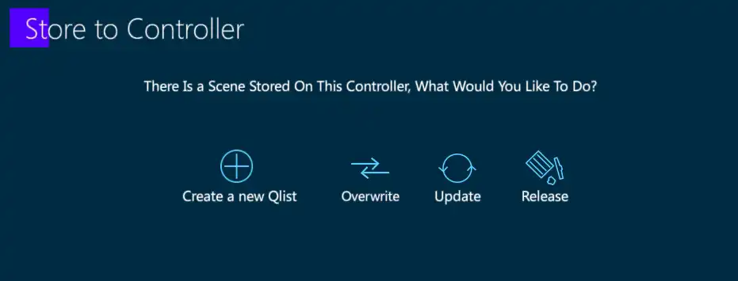
Store Options
In the process of storing a cue, a number of filters and settings are available.
To open the Store Options popup, two methods are available:
- Store cues using keypad syntax
Set values in the Editor.
[CUE] [#] [OPTIONS] Cue Store Options popup opens. Make selections and press [STORE].
- Store cues directly to a Qlist on a Controller
Set Values in the Editor.
Press [STORE] [OPTIONS] Cue Store Options popup opens. Make selections and press [HERE] to any button on the destination controller.
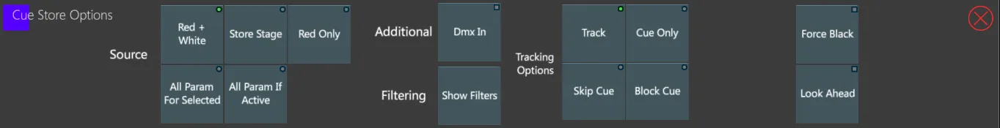
Source
{Red + Grey} Editor Values in 100% 90% will be stored.
{Store Stage} All fixtures outputting ANY DMX from the console will be stored. This includes tracked values, home values and dimmer values at zero.
{Red Only} Only Editor values in Red will be stored. This can be a useful way to filter parameters.
{All Param For Selected} All parameters from the fixture selection will be turned red and stored in the cue.
{All Param If Active} All parameters of all fixtures in the editor will be stored if the dimmer parameter is greater than zero.
Additional
{DMX In} Takes a snapshot of incoming DMX and attaches it to the cue.
{Force Black} When it is not desirable to see values move from one cue state to another, Force Black may be used to save programming time. In a cue tagged as Force Black, the dimmer parameter is first “forced” to Black Out, parameters then move in black, then the dimmer parameter is faded up again. The total speed of a Force Black operation is relative to the overall cue time.
Filtering
- {Show Filters} Opens user prebuilt filters in the popup.
Source behavior when stored:
{Track} Normal system behavior
{Skip Cue} Tags a cue as a skip cue in the case of inserting a new cue. In the case of updating a cue by storing to an existing cue, only the values being updated will be made into Skip cells.
{Cue Only} Inserted cues will not affect the look of cues following them.
Look Ahead
- Unlike having to Look Ahead automatically preposition all dark parameters for all cues in a Qlist, a cue tagged in Cue Store Options as {Look Ahead} will preposition dark parameters for just that specific cue.
Force Black
- Tagging a cue as {Force Black} in Cue Store Options, is the same as setting the cue as {Force Black} in {Cue settings}.
10.1.2 Edit & Update
Modify cues using EDIT
[QLIST] [#] [CUE] [#] [EDIT] - Cue values will be placed in the Editor and the [UPDATE] key will flash red.
Modify the parameters in the Editor as required.
Press [UPDATE] to complete the edit and restore control to the source controller.
👉 This method may be used in [BLIND] and unlike live, fixtures may be released from the source cue. Effects may also be edited.
Modify cues using {Overwrite}, {Update}, or {Release} keys
Make a change to parameter value outputting to the stage.
Press [QLIST] [#] (if not not on the Master Controller) [CUE] [#] [STORE].
If the cue exits, the Cue Exists popup will appear with options for {Cancel, Update, Overwrite, Release}.
Tap {Overwrite} to replace all fixtures with those in the Editor.
Tap {Update} to merge the Editor into the selected cue.
Tap {Release} to remove the selected fixtures from the cue.
Cue Settings popup
- Press [CUE] [#] [SETTINGS] - The Cue Settings popup will appear.
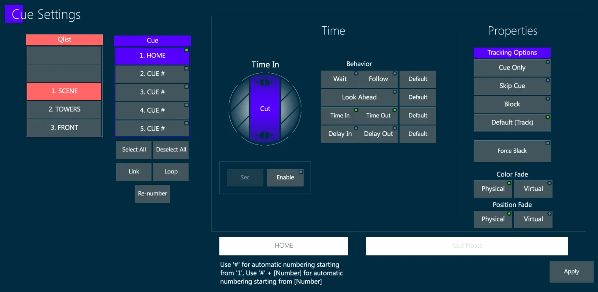
- Alternatively tap the {Cue #} area of the source Playback Status box to open the Cue Settings popup.
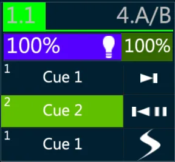
Cue Settings popup is used for changing Text, Cue Time, Cue Link and Loop, Cue Re-number and Cue Tracking options at any time after the Cues are created.
Update directly to a Controller
Make a change to parameter value outputting to the stage.
Press [UPDATE] - The Update popup will open.
Make option changes if needed.
Press [HERE] to any button on a destination Controller - the Editor values will be updated into the active cue on the destination Controller.
Update a cue or range of cues using keypad syntax
Make a change to parameter value outputting to the stage.
Type [QLIST] [#] (if destination cue/cues are not on the Master Controller) [CUE] [+ ⟶ -] [CUE] [#] [UPDATE] - Modifications will now be updated to the destination cue selection.
Update options
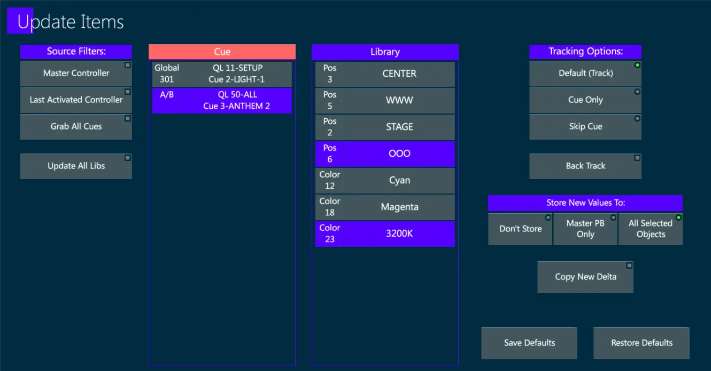
Make a change to parameter values already outputting to the stage from an active cue or scene.
Press the [UPDATE] and the Update popup will open. Two columns will appear, showing the contents available for updating. The left column shows Cues and the right column shows Libraries. If affected values are not referencing a library, the Cue column will indicate the source cue that the modifications will be updated to.
Set Source Filters as required.
{Master Controller} - Updates will only be made to the active cue on the controller assigned to the Master Controller.
{Last Activated Controller} - Updates will be made to the last controller that asserter priority.
{Grab All} - All Active Controllers will be shown in a list and the user must select the destination of the updates.
Selected cues and libraries may be freely deselected in the Update popup.
Set Tracking Options as required.
{Default (Track)} - Changes will track forward to the next cue if it does not have a hard value.
{Cue Only} - Changes will be made only to this cue, preserving the look of the next cue (Hard values will be added to the next cue).
{Skip Cue} - Changes will be made to the current cue but the changes will be “skipped over” preserving the link to the original hard values.
{Back Track} - Updates the changes to the original hard value that is tracked from a previous cue.
- If the Editor parameter values are new to the active cues or to the destination cue, the store of these values will be dependent on the Store New Values To setting:
If {All Selected Objects} is selected, a list of all possible active cues will appear in the Cue column.
If {Master PB Only} (controller) is selected, new values will be only be updated to the Qlist assigned as Master Controller.
If {Don’t Store} is selected, no new parameter values will be updated.
- Tap Apply or press [ENTER] to close the popup and complete the Update.
10.1.3 Delete
Delete a Scene
[SCENE [#] [DELETE]
Optionally select other Scenes to be deleted.
Press Apply or [DELETE] again.
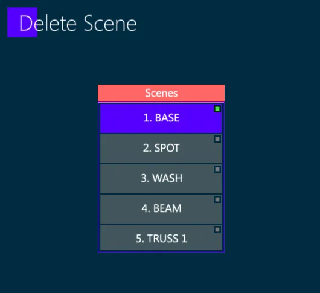
Delete a Qlist
[QLIST] [#] [DELETE]
Optionally select other Scenes to be deleted.
Press Apply or [DELETE] again.
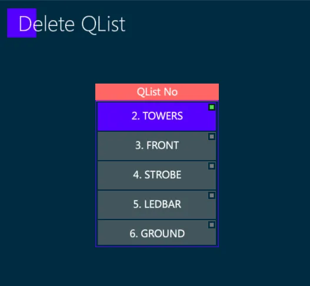
Delete a Cue
[QLIST] [#] (Optional if the controller is the Master) [CUE] [#] [DELETE]
Press Apply or [DELETE] again.
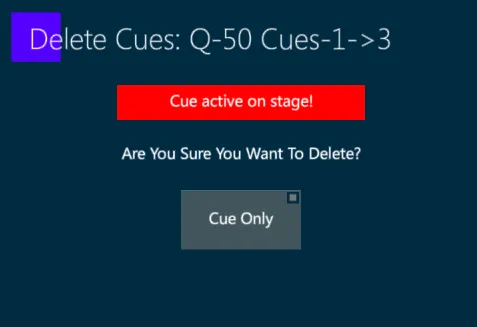
10.1.4 Copy & Paste
Copy a Cue to a new Cue
[CUE] [#] [COPY]
The Copy Cue popup will open
Three Options are available:
{Actual Cue} - Copies cue properties as well as stored parameter values
{State} - Copies all of the hard values and tracked values that make up the source cue’s “End State” (Stage look)
{Values Only} - Copies only the hard values that are stored in the source cue
[CUE] [#] [PASTE] - The Cue Only popup will open
Three Options are available:
{Track (Default)} - Creates the cue as a normal tracking cue
{Cue Only} - Creates the cue as a Cue Only, converting the tracked values in hard values on the next cue
{Skip Cue} - Creates the cue as a Skip Cue, preserving the tracked values on the next cues
Choose an option and the operation will be completed
Create a new cue using values from an existing cue
Use one of the following two menu commands:
[CUE] [#] {LOAD} - Loads the cue’s hard values into the Editor. Tracked values are ignored.
[CUE] [#] {LOAD STATE} - Loads the cue’s hard values and the current tracked values (Stage State) into the Editor.
Continue modifications and store as a new cue.
10.1.5 Text
Immediately after a Store operation of any object (Group, Library, Scene, Cue, …), writing on the keyboard will automatically open the Text popup to enter the label, with no need of pressing [TEXT].
If the label has to be assigned on an already existing object, the syntax is:
Select the object
Press [TEXT]
Enter the text and Apply
Assign a Text to a Qlist
Method 1 - [QLIST] [#] [TEXT] opens the Text Entry popup.
Method 2 - [QLIST [#] [SETTINGS] opens the {Qlist Settings} popup. Enter Qlist Text in the white box.
Method 3 - Press the Qlist header above a loaded Controller, the {Qlist Settings} popup opens. Enter Qlist Text in the white box.
Assign a Text to a Cue
Method 1 - [QLIST] [#] [CUE] [#] [TEXT] opens Text Entry popup.
Method 2 - If assigned to the Master Controller, [CUE] [#] [TEXT] opens Text Entry popup.
Method 3 - [CUE] [#] [SETTINGS] opens {Cue Properties} tab of Cue Settings popup. Enter Qlist text in the Text Box.
Method 4 - [TEXT] [HERE] press any button on the destination controller.
Method 5 -
Press the Cue area of the display above the Controller, the {Cue Properties} popup opens.
Select the desired cue.
Enter cue text in the text box.
Optionally notes may also be entered for the selected cue.
10.2 Scenes
Scenes are essentially a QList with a single Cue.
Scenes contain a single “Look” of editor values.
Scenes assigned to Slider Controllers are given the default settings of:
{GO + Jump Parameters}
{Release At Bottom}
Scenes may only be assigned Time In.
Scenes may be given Text labels.
10.2.1 Scene Settings
- [SCENE] [#] [SETTINGS] opens the Scene Settings popup.
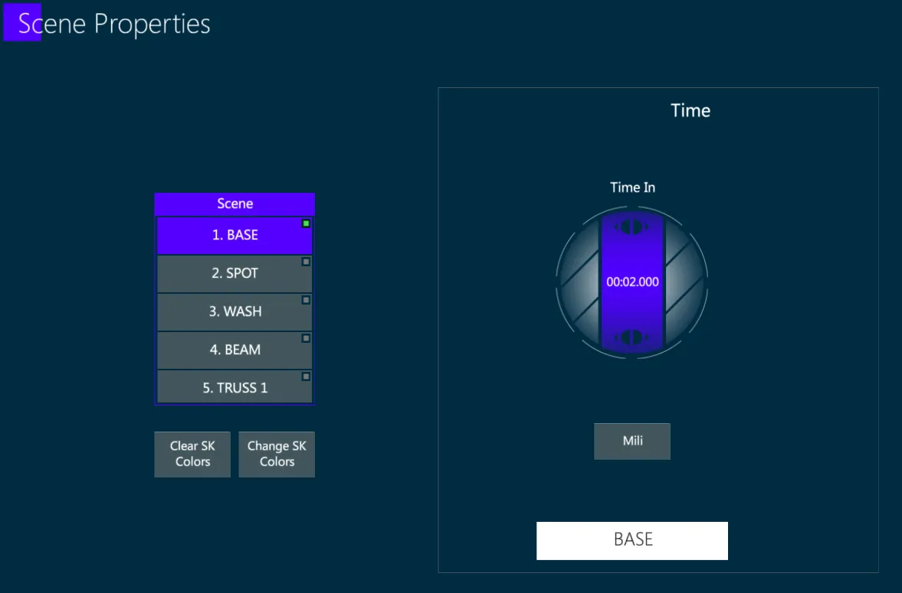
One or more scenes can be selected from the Scene column, in order to change the SK color settings and to assign a Time-In and Text.
10.2.3 Home Scene
By default released fixtures return to their home values as defined by the device’s fixture profile.
The device profile is usually based on the manufacturer’s suggested defaults, but the defaults may not be appropriate if the user prefers to set different home values.
Vibe allows users to customize Home Values by building a Home Scene.
When a fixture is programmed in a Home Scene it will take preference over its home values in the device profile.
Store a Home Scene
Program fixtures in the editor to values that will work best as home values.
Press [SCENE] [HOME] [STORE] - fixtures will now use the Home Scene values when released.
Update a Home Scene
Program fixtures in the editor to values that will work best as home values.
Press [SCENE] [HOME] [UPDATE] - fixtures will now use the Home Scene values when released.
Delete a Home Scene
- Press [SCENE] [HOME] [DELETE] - Home values will return to the device profile’s home values.
10.3 Submasters
Submasters are a special type of Scene where stored fixtures limit their dimmer values proportionally to their assigned slider controller’s value. All other parameter values are ignored.
Groupmasters are a special type of Submaster where stored groups of fixtures limit their dimmer values proportionally to their assigned slider controller’s value. Groups are directly assigned to controllers to create Groupmasters, that will reference the original Groups and update automatically if the Groups are modified.
Both Submasters and Groupmasters can be assigned to any controller, but they get a Cyan color instead of the Yellow color that identifies Scenes.
10.3.1 Submasters
Submasters are stored together with the Scenes, but they get a “SUB M” label on the soft-key.
Store a Submaster
Make a Fixture Selection without setting any value to the parameters.
[SCENE] [#] [STORE] - The “empty” scene automatically becomes a Submaster.
Convert a Scene into a Submaster
Any Scene can be easily converted into a Submaster.
Press [SETTINGS] [HERE] to any button of a controller that has a Scene assigned to it.
The Controller Actions popup will appear.
Tap the middle {Button}. The Choose Control drop-down menu will appear.
Select the {Submaster} option with the Crown on it.
The middle button mimic should now say {Submaster}.
Close the popup by pressing [ENTER] or tapping Apply.
The Scene will now act as Submaster on the fixtures included.
The Scene’s fixture values will be ignored.
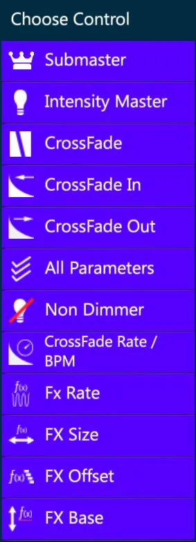
Convert a Submaster into a Scene
Any Submaster can be easily converted into a Scene.
If the Scene used to have parameter values stored before being converted into a Submaster, reconverting the Submaster into a Scene will restore those values.
If the Scene was originally stored as a Submaster, converting the Submaster into a Scene will only contain the Dimmer of the stored fixtures at Full value.
Assign a Submaster directly to a Slider Controller
Specify a fixture selection but do not assign editor values.
Press [STORE] [SCENE] [HERE] to any button of the destination controller.
The [Top Controller Button] will now turn light blue to indicate that it is now a Submaster.
When the slider handle is down the [Top Button] will flash to indicate that levels are being inhibited. When it is at full the button’s blue backlight will go steady.
10.3.2 Groupmasters
Groupmasters are stored together with the Scenes, but they get a “GRP M” label on the soft-key.
Groupmasters work exactly like Submasters, but they are stored using existing Groups as fixture selection, and they keep the Group reference.
Store a Groupmaster
Make a Group Selection without setting any value to the parameters.
[SCENE] [#] [STORE] - The “empty” scene automatically becomes a Groupmaster.
Assign a Group to a Slider Controller using keypad syntax
Press [GROUP] [#] [HERE] - To any button of the destination slider controller.
The first available Scene is stored as a Groupmaster.
The top controller button will turn light blue to indicate that it is now a Group Groupmaster.
Assign a Group to a Slider Controller using Group softkeys
Press a {GROUP} softkey and press [HERE] to any button of the destination slider controller.
The first available Scene is stored as a Groupmaster.
The top controller button will turn light blue to indicate that it is now a Group Groupmaster.
When the slider handle is down the [Top Button] will flash to indicate that levels are being inhibited. When it is at full the button’s blue back light will go steady.
10.4 Cues
Cues are single steps of a sequence, called a QList.
Cue may only exist within Qlists, they cannot be stored without a Qlist destination.
Cues may be numbered from 0.001 ⟶ 999.999
Cues contain a single “Look” of editor values.
Single Cues can be assigned to Controllers and it will not playback the rest of the Qlist.
Cues may be assigned Time In, Time Out, Delay In, Delay Out, Look Ahead, Wait, Follow.
Cues may be given Text labels.
10.4.1 Cue Settings
- [QLIST] [#] [CUE] [#] [SETTINGS] opens the Cue Settings popup.
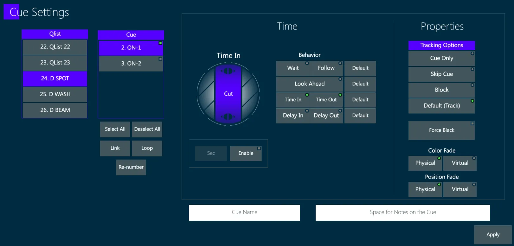
One or more Qlists and Cues can be selected from the columns, in order to change their settings, time and properties.
10.4.2 Cue Time
[QLIST] [#] [CUE] [#] [TIME] opens the Cue Time popup.
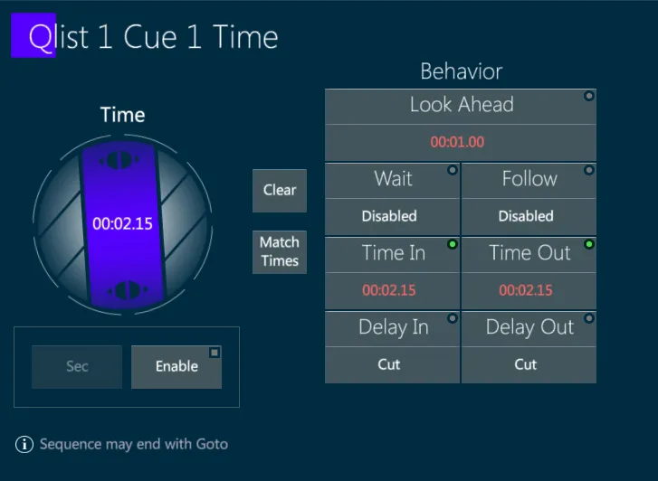
The Cue Time popup is used to set the timing properties of the Cue:
Time In
Time Out
Delay In
Delay Out
Wait Time
Follow Time
Look Ahead Time
Assign a {Time In/Out} to a Cue
Press [CUE] [#]
Press [TIME], the Time popup will appear
Enter a value with the keypad. The default unit of time will be seconds.
Press [ENTER] or tap Apply to exit the popup and assign the cue time.
Assign a separate {Time In} {Time Out}, and/or {Delay In} {Delay Out} times to a Cue
Press [CUE] [#]
Press [TIME], the Time pop-up will appear.
Press [TIME] again and the display will advance to {Time In}.
Press [TIME] again and the display will advance to {Time Out}.
Press [TIME] again and the display will advance to {Delay}.
Press [TIME] again and the display will advance to {Delay In}.
Press [TIME] again and the display will advance to {Delay Out}.
Alternatively times can be directly entered on the Cue Time popup by tapping the desired time field and making a keypad entry or turning the virtual wheel.
Out times only apply to dimmer parameters.
Wait and Follow Times
There are two ways to make a cue automatically follow another:
Wait Time - Starts counting down from the [GO] press before the next cue is executed.
Follow Time - Starts counting down upon completion of the current cue time and all of its individual parameter times.
Set a Wait Time
Select the cue you want the Wait to be executed from.
Press [TIME] - the Time popup will appear.
Tap {Wait} and either type in the Wait Time or use the virtual time wheel to set the Wait Time.
To clear a Wait Time, turn the Wait Wheel until the {Wait} display writes N/A, press [ENTER]
Set a Follow Time
Select the cue you want the Follow to be executed from.
Press [TIME] - the Time popup will appear.
Tap {Follow} and either type in the Follow Time or use the virtual time wheel to set the Follow Time.
To clear a Follow, turn the Follow Wheel until the {Follow} display writes N/A, press [ENTER]
10.4.3 Param Time
Param Time, also known as Cell Time, is a Time and Delay assigned to a specific selection of parameters.
Param Times can be stored in Scenes and Cues, as well as in Libraries.
The Param Times have priority over Cue Times; if any value of a fixture’s parameter has a Param Time assigned, it will fade in the param time instead of the Cue Time.
Each parameter cell can have its own individual time which overrides overall cue time. This allows, for example, Pan/Tilt to have a separate transition time or Color Wheels to snap to their values instead of using overall cue time.
Open the Param Time popup by pressing [TIME] after selecting any fixture in the Editor.
If one or more Params of the fixture selection are active in the Editor, the Time popup will show their columns already selected.
The time cells’ background is Blue, Red or White according to the Editor state of the parameter.
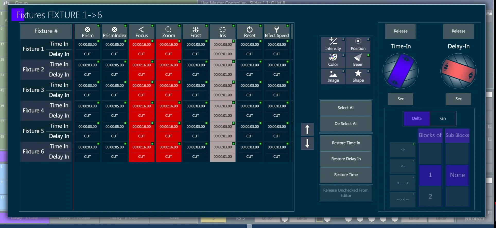
Assign Parameter Time during Cue Creation
Set fixture parameter values in the Editor.
Select the fixtures requiring Parameter Time.
Press [TIME] - The Parameter Time popup will appear.
Toggle on/off the parameters requiring Parameter Time
Parameter view may be filtered by banks.
Fixtures may be selected and detected freely in the popup.
Toggling the parameter header will reselect all fixtures.
Set the parameter time for the selected fixtures directly using the keypad, or by using the virtual or physical time wheels.
Press [ENTER] or tap Apply to close the popup.
Selected fixtures will now show a clock icon in the Live View.
Store the Cue.
Add or Modify Parameter Time after Cue Creation
Method 1:
Select fixtures that are active on the stage - Specific parameters may be selected before pressing [TIME].
Press [TIME] - The Time popup will open.
Toggle on/of the parameters that require Parameter Time.
Set the parameter time for the selected fixtures directly using the keypad, or by using the virtual or physical time wheels.
Press [ENTER] or tap Apply to close the popup.
Selected fixtures will now show a clock icon in the Live Display.
Press [UPDATE].
Method 2:
Press [CUE] [#] [EDIT] - Update will flash red and the cue will be placed in the Editor.
Select the fixtures that need parameter time editing.
Press [TIME] - The Time popup will open.
Toggle on/of the parameters that require Parameter Time.
Set the parameter time for the selected fixtures directly using the keypad, or by using the virtual or physical time wheels.
Press [UPDATE] to complete the modification. The Update light will stop flashing.
Remove Parameter Time
Press [CUE] [#] [EDIT] - Update will flash red and the cue will be placed in the Editor.
Select the fixtures to release time from - Specific parameters may be selected before pressing [TIME].
Press [TIME] - The Time popup opens.
If they were not already selected, toggle on/of the parameters that require Parameter Time to be released.
Press either the {Release} key over the Time-In wheel or the {Release} over the Delay-In wheel.
Press [UPDATE] to complete the modification. The Update light will stop flashing and the parameters will be released back to cue time.
Fan Parameter Time
Method 1:
Select fixtures that are active on the stage - Specific parameters may be selected before pressing [TIME].
Press [TIME] - The Time pop-up will open.
Toggle on/of the parameters that require parameter or delay time.
Tap the Time-In or Delay-In virtual wheel.
Tap {Fan}.
Toggle the desired fan direction key.
Rotate the appropriate virtual wheel to fan the Time-In or Delay-In.
Press [ENTER] or tap Apply to close the Parameter Time popup.
Press [UPDATE] - Check that the correct cue is selected.
Press [ENTER] or tap Apply to close the Update popup.
The above sequence will also work with [CUE] [#] [EDIT] but step 10 is redundant.
Method 2:
Select fixtures that are active on the stage - Specific parameters may be selected before pressing [TIME].
Press [TIME] - The Time popup will open.
Toggle on/of the parameters that require parameter or delay time.
Tap the Time-In or Delay-In virtual wheel.
Type a time or delay range.
To evenly fan delay-in time for tilt in a selection of 8 fixtures, Tap {Delay-In} wheel and then 0 → 8 seconds on the keypad.
Press [ENTER] or tap Apply to close the Parameter Time popup.
Press [UPDATE] - Check that the correct cue is selected.
Press [ENTER] or tap Apply to close the Update popup.
The above sequence will also work with [CUE] [#] [EDIT] but step 8 is redundant.
Method 3:
The following command combination enables a cell time fan without the need to touch the screen and set the time with the wheel.
Select Fixtures
Give values to a parameter
Press Time
Popup opens
Press #→# and ENTER The first number is the base for the fan and the second number is the end value of the fan.
In the picture below there is a fan between 2 and 6 seconds on the Tilt parameter.
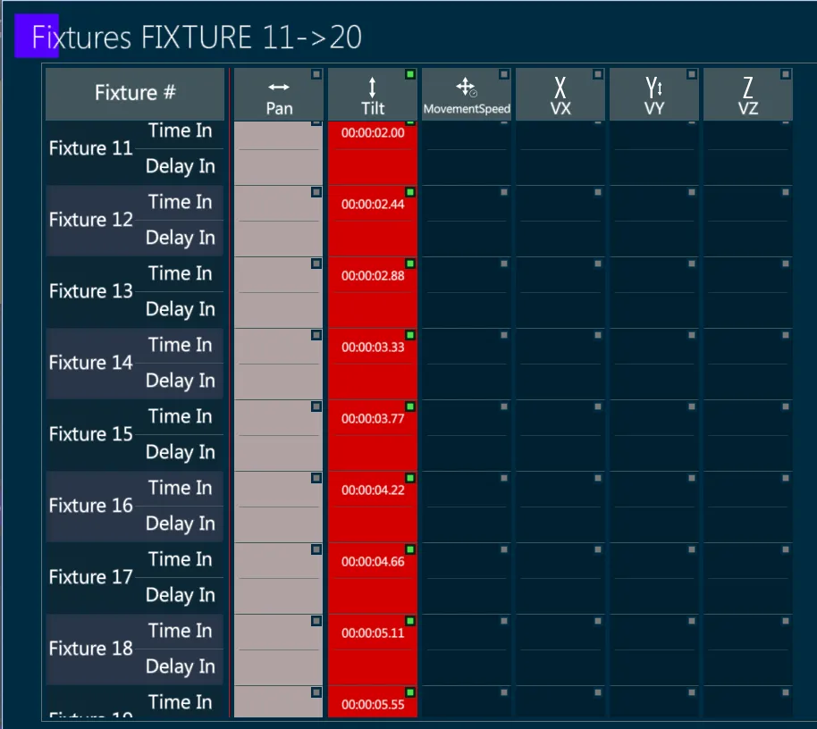
10.4.4 Param Profile
Profile determine a parameter’s behavior during a fade.
Profiles are always relative to the fade time.
Profile options are available in a popup that is triggered from a button on the toolbar named Profile. This button is valid once there is a valid parameter selection.
Profile examples:
Linear (default) – on go, the parameter fades in cue time to its new level
Jump on Start (One) – on go, the parameter jumps to its level
Jump on End – when the fade is complete, the parameter jumps to its new level
Jump on 50% (Step) – when the fade reaches 50% of the cue time, the parameter jumps to its new level
Any function from the system functions can be applied as a profile.
Set a Parameter Profile
Select fixtures
Select parameter(s)
On the Editor Toolbar tap Profile
Popup opens
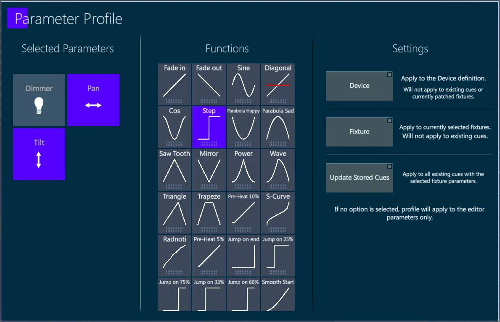
On the left side there is a list of active parameters in the editor. Colored are the parameters that the settings will be applied to. User can switch a parameter on or off.
In the middle there is a list of functions. User may select the desired function as the profile for the parameters.
On the right side there are options that can be changed and explained in the table below.
User may apply the popup with nothing selected on the options or with all the options active.
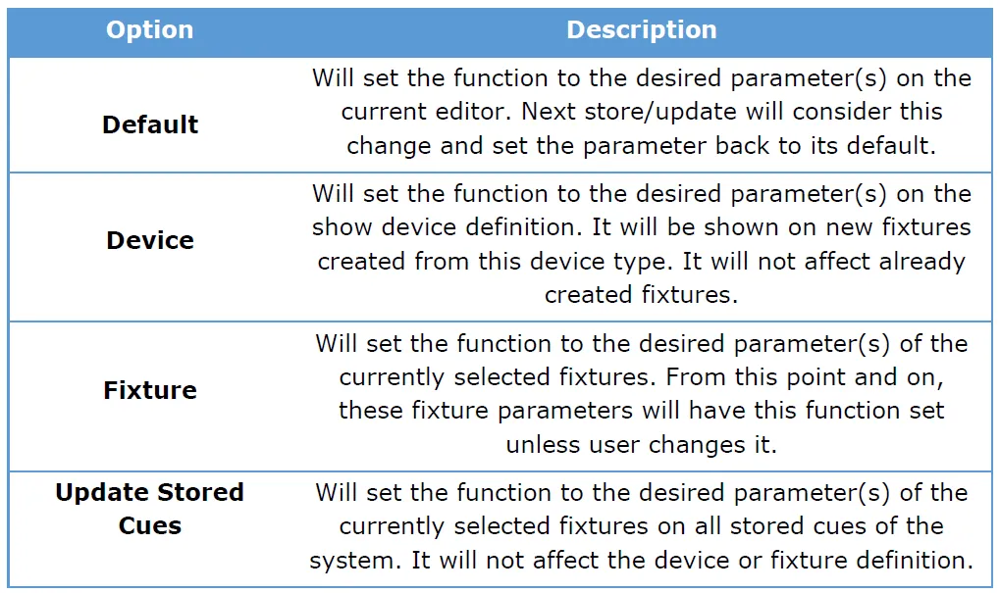
10.4.5 Virtual Param Fade
As described in the Program section, the fixtures may be manipulated physically, by assigning a value to the target parameter, or virtually, by assigning a value to the virtual parameter that will be translated by the system to the fixture’s real parameter.
The Virtual Parameters are:
Virtual Color Mix - HSI system (V-Hue, V-Saturation, V-Intensity)
Virtual Position - XYZ coordinates (Vx, Vy, Vz)
By default the fade between Cues is considering the transition between the physical parameters, but the option can be switched for each Cue, in the Cue Settings popup, to set a fade between the virtual parameters.
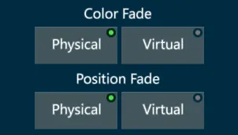
A Color Fade using Virtual HUE parameters allows to fade between different color mixes without changing the Saturation, by only moving the Hue value, or to fade only the Saturation (or the Intensity) without changing the tone of the color.
The Vibe will automatically manage the timing to set to each of the colors involved to get the fade as programmed.
A Position Fade using Virtual XYZ coordinates allows to fade between different positions moving on a straight line, for example only on the X axis or on the y axes of the stage, without calculating the curve that physical Pan and Tilt values should be faded to get that result.
The Vibe will automatically manage the timing to set the Pan and Tilt fades to get the fade as programmed, basing on a proper fixture calibration that allows the system to know the stage size and the fixture positioning.
10.5 Qlists
Qlists are containers that hold Cues.
Each Qlist has its own unique Cue numbering system.
Qlists contain a sequence of Cues in a specified order.
Each Qlist may have up to 8,000 cues.
Qlists containing Cues must be assigned to Controllers to output to the stage.
Every Qlist can be assigned to many different controllers at the same time, and played back individually.
The playback options of a Qlist are a combination of the general Qlist Settings and the Cue Settings of the internal Cues.
Qlists may be given Text labels.
10.5.1 Qlist Settings
Qlist Settings can be stored in two ways: either to the Qlist itself or to the Controller that currently has the Qlist assigned.
- [QLIST] [#] [SETTINGS]
Opens the Qlist Settings popup, to store the settings directly to the Qlist.
Tap on the Qlist name on the top of the Playback Status box, or
[SETTINGS] [CONTROLLER]
Opens the Controller Settings with the Qlist Settings Tab, to store the settings only to the specific controller. In this case the Store to Qlist button may be enabled to store the settings to the Qlist as well.
The Restore default button rolls back the changed settings to the default ones.
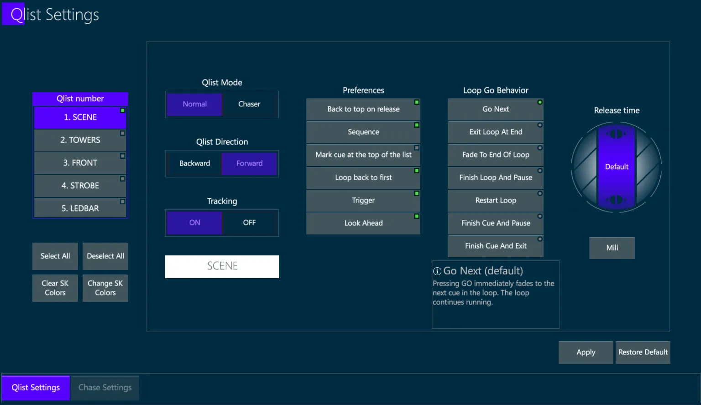
{Qlist Mode} - Defines if the Qlist will play normally or as a Chaser.
{Qlist Direction} - May be used to invert the playback order.
{Tracking} - Enables or disables the Tracking on the specific Qlist for further Cue store operations. It won’t affect the already stored Cues.
{Preferences} - Defines the general behavior of the Qlist.
{Back to Top} Sets the Qlist to restart from the first Cue when it is release.
{Sequence} Enables or Disables the Cues’ sequence. A Qlist assigned to a controller has the Sequence enabled while a single Cue has the Sequence disabled.
{Mark Cue at the Top} Inserts a Mark Cue before the first Cue to preposition the parameters.
{Loop Back to First} If enabled, a GO command to the last Cue will fade to the first Cue, making the Qlist a loop.
{Trigger} Enables or Disables the activation of elements stored to the Cues, such as Macros.
{Look Ahead} Enables or Disables the Look Ahead to move in dark the parameters.
{Loop Go Behaviour} - Defines the behavior of the Qlist. A short explanation of the selected behavior is given at the bottom of the area.
{Release Time} - Defines a time that the Qlist will use when it is released.
Other relevant settings that may affect the behavior of a Qlist can be set to specific target Cues, so they can be found in the Cue Settings popup.
Cue Settings popup can be opened with [QLIST] [#] [CUE] [#] [SETTINGS] or by tapping on the Cue name on the left side of the Playback Status box.
10.5.2 Tracking
Vibe uses the Tracking philosophy common in most current lighting consoles. In tracking consoles, “Hard Values” (parameter values with stored information) track forward from cue to cue until new hard values are encountered.
Tracking systems have two kinds of parameter value cells:
“Hard Value” Cells are values actually stored in the Cues,
“Tracked Value” Cells get values by the original hard values stored in the previous Cues.
If the user prefers to use the Non Tracking philosophy, it is possible to switch the mode in System Settings. For programming in Non Tracking, it is suggested to apply the Compulite Mode to set a few options that help managing the workflow.
The Tracking method is more efficient, because only hard values are stored in a Cue while the values that are not supposed to change are taken from the previous Cues, making the total amount of stored data much lighter.
Oppositely the Non Tracking method stores hard values in each Cue, so if a parameter value is not changing for many sequential Cues, it will anyway be stored in each Cue, making the whole amount of store data much heavier.
Vibe’s default behavior for parameters it LTP (The last action takes precedent), a cell assigned its own time will continue to run its time until either the stored time runs out or it encounters a new hard value.
An advantage of tracking is that it makes it faster the update of values through many consecutive Cues. If values are tracking through a number of cues, by changing the original hard values the information will change for all the Cues down to the next hard value, with no need to copy the changes to each cue.
An issue with tracking is that making a modification to values in one of the cues in the tracked range will change the values in all the cues following it.
Vibe offers smart options to manage the Cue editing process and avoid tracking values when they are not needed. These options that can be assigned independently to each single Cue of a Qlist, are listed in the Cue Settings popup.
Individual cues may be tagged with one of the following Tracking Options
- Cue Only - Removes tracked values from asserting to the stage and sets them at home values (Not to be confused with Cue Only used with [UPDATE] which works on a cell basis).
{Cue Only} is used in any case where cue editing, cue insertion, or cue deletion must affect “This Cue Only”.
The look of the cue following any of the above operations will maintain the appearance it had before the operation.
This is done by automatically copying the hard values that made up the original look (stage state) and pasting them into the cue following the modification.
The downside is that there is no longer a tracking link from the original hard values even though the values match the original values.
- Skip Cue - All cells in the cue will behave like Skip Cells. Values will still “skip around” a Skip Cue, even if the values in the Skip Cue are modified.
{Skip Cue} stores modified values as a special kind of cell that acts like a normal Tracking Cell until the Skip Cell is reached.
The Skip Cell behaves as if it has hard values and outputs its value to the stage, but when the Qlist is advanced past a cue with the Skip Cells they again behave as tracking cells, thus restoring the link to the original hard values.
👉 Storing a Cue modification using Skip Cue, has the same apparent result as storing Cue Only. The main difference is that with Cue Only the link to the original hard values is lost, while with Skip Cue the link is preserved.
To make it easier for users to identify cues with Skip Cells, the parameter value with the Skip will be displayed in Magenta.
In live playback view, cues that are set as Skip Cues have a Magenta color.
- Block Cue - All cue parameter values whether tracked or hard will be made to act like hard values. Any new values added to cues above the Block cue will not track past a cue tagged as a Block.
{Block Cue} acts like a stopper for the tracking values, but it doesn’t need to contain all hard values as it will avoid the tracking also on the values that are not store but are there because are tracked from previous cues.
In live playback view, cues that are set as Block Cues have a Blue color.
- Default (Track) - The systems default behavior.
{Track Cue} will get the values tracked from the previous cues, modify only the hard values that are stored in it, then track all the values to the following cues.
10.5.3 Move in Dark
There are 2 conditions when a fixture may be wanted to move in dark, with the light not visible, to preposition the parameters without showing the changes until they are completed.
- The fixture’s Dimmer is ON, so any parameter movement will be visible. The only way to hide the changes is to temporarily shut down the light output, then moving the parameters, then reopening the Dimmer.
In this situation Vibe uses the Force Black Cue.
- The fixture’s Dimmer is OFF, but the parameters are changing in the next cue while the Dimmer is reopening, so the light output is going to make the movements visible. Then the user would like the fixture to preposition the parameters that are going to be different in the next Cue before it starts fading, while the Dimmer is still at 0%.
In this situation Vibe uses the Look Ahead.
Force Black
Force Black is an additional Cue Setting that any cue can be individually tagged with.
Use Force Black when it is not desirable to see values move from one cue state to another.
Force Black Cues may be used to save programming time. In a cue tagged as Force Black, the dimmer parameter is first “forced” to Black Out, parameters then move in black, then the dimmer parameter is faded up again.
The total speed of a Force Black operation is relative to the overall cue time.
Store a cue as a Force Black
[QLIST] [#] (if not on Master Controller) [CUE] [#] [SETTINGS]
Toggle {Force Black} On - The indicator will turn green and the cue will be flagged as a Force Black cue.
Press [ENTER] or tap Apply to close the popup.
Remove a Force Black
[QLIST] [#] (if not on Master Controller) [CUE] [#] [SETTINGS].
Toggle {Force Black} Off - The indicator will turn off and the cue will no longer act as a Force Black cue.
Press [ENTER] or tap Apply to close the popup.
Look Ahead
Look Ahead is a Qlist Property that needs to be set on the Qlist or Controller and on the Fixtures or Parameters, by including them into a Look Ahead Mask.
Look Ahead feature is used for automatic pre-positioning of selected parameters when the fixture’s dimmer is dark, thus avoiding visible parameter movement.
For Look Ahead to work, the fixture’s dimmer must be at 0% and there must be a parameter move from the current cue to the next cue.
Look Ahead fades can be set for a specified default time or user time, which can be different from the cue’s default fade time.
Before using Look Ahead, a Look Ahead mask must be created.
The Look Ahead mask tells which spots, or spot parameters, are affected by the Look Ahead feature. If no parameters have been specified in the Look Ahead mask, all the fixtures’ parameters will be affected.
Currently the Look Ahead pre-positioning will happen at the last available opportunity before the dimmer turns on.
👉 If in specific cues you want to prevent applying the Look Ahead mask, give dimmers a value of 1%.
Fixtures without physical dimmer parameters should not be included in the Look Ahead Mask.
Enable or Disable Look Ahead on all controllers
Open System Settings from the Vibe Menu or tap the status area of the main monitor - The System Settings popup will open.
Tap the {Timing} tab to open the Timing Properties popup.
Under the Look Ahead header enable or disable all controllers using {Set All Controllers ON} or {Set All Controllers OFF}.
There is no confirmation of On/Off as these buttons basically toggle {Look Ahead} in all Qlist Settings popups.
If Look Ahead is globally turned off it may still be enabled on a per Qlist basis in the Qlist Settings popup.
Look Ahead status for individual controllers may be viewed in the controller’s Qlist Settings.
Store a Look Ahead Mask
Select the fixtures to be in the Mask.
Optionally select the parameters to be included in the Mask - If no parameters are selected, all parameters will be included.
Tap {LOOK AHEAD MASK} on the Editor Toolbar.
Press [STORE].
Delete a Look Ahead Mask
Select the fixtures to be deleted from the Mask.
Tap {LOOK AHEAD MASK} on the Editor Toolbar.
Press [DELETE].
Set Look Ahead Time
Set the speed at which fixtures move in dark, individually on each Cue.
Cues without a specific Look Ahead Time assigned will use the default Look Ahead Time.
[CUE] [#] [TIME] - The Time popup will open.
Tap {Look Ahead} - The indicator will turn green and Look Ahead will appear over the virtual time wheel.
Set the time value using the virtual wheel or type the value directly on the keypad.
Press [ENTER] or tap Apply to close the popup and store the Look Ahead time.
Look Ahead time can also be changed using the [CUE] [#] [SETTINGS] command.
Default Look Ahead time can be set in System Settings/Defaults/Cue Settings.
Enable or Disable Look Ahead on individual controllers
Press [SETTINGS] [HERE] to any controller button of the controller you wish to enable or disable Look Ahead on - The Settings popup will open.
Tap the {Qlist properties} tab - The Qlist Properties popup will open.
Toggle Look Ahead on or off.
Press [ENTER] or Apply to close the popup.
10.5.4 Link
Link is a feature that allows to create a link between two not consecutive Cues, so that a Go command to the first Cue will fade to the linked Cue instead of the following Cue.
A common sample of using the Link is when a show is programmed on a main Qlist, and for a temporary cause a part of the scenes has to be ignored without deleting them (maybe an actor is missing and his part of the show will not be performed this time, but it will be performed again on the next dates of the tour, as soon as he comes back).
The Link allows to connect the Cue before the “missing part” to the cue that follows it, without losing the data contained in the “jumped” cues. When removing the Link the cues in between will be restored.
Cues may be linked using the Link popup.
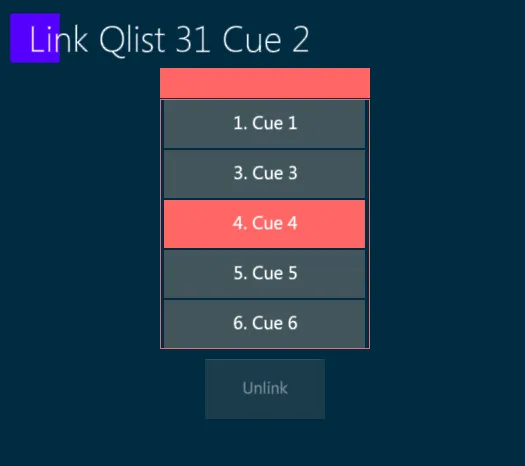
👉 In cue sheet, cues that are disabled because of a Link are grayed out.
Cues may be linked out of sequence using the following methods:
Link with keypad and Toolbar
Source [CUE] [#] {LINK} on the Editor Toolbar - The Link popup will appear.
Type link destination [#] (Do not press [CUE]).
Press Enter or Apply to complete the operation.
Link with Cue Settings
Source [CUE] [#] [SETTINGS] - Cue Settings popup will open.
Tap {Link} - The Link popup will appear.
Type, scroll or drag to the desired destination cue.
Press Enter or Apply to complete the operation.
Press Enter or Apply again to close the Settings popup.
Remove a Link with keypad and Toolbar
Select the source [CUE] [#] and tap {Link} on the Editor Toolbar, the Link popup will appear.
Press [RELEASE] to remove the link.
Remove a Link with Cue Settings
Select the source cue and open the Link popup by any of the above methods.
If the proper source cue has been selected, the {Unlink} key will appear.
Tap {Unlink} key to remove the Link.
👉 If the source cue is forgotten, check the Link # field in the Live Master Controller Cue Sheet.
10.5.5 Loop
In many consoles the only way to create a loop is to create a link from the end of a range of cues back to the beginning. Follow time must then be assigned to all of the cues. In Vibe this is also possible, but a shorter more efficient method is also provided.
Loop function is an evolution of the Link function, and it can be also assigned either with the keypad and Toolbar or with the Cue Settings popup.
Cues may be looped using the Loop popup.
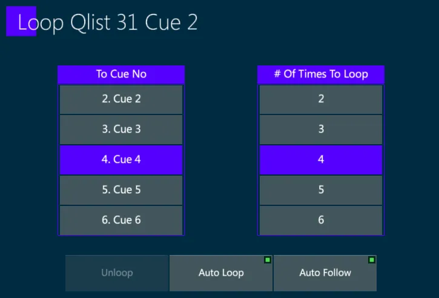
In live playback view, cues that are set as Loop Cues have an orange color.
Cues may be looped using the following methods:
Loop with keypad and Toolbar
Start [CUE] [#] tap {LOOP} on the Editor Toolbar - The Loop popup will appear.
Type end [#] or use {To Cue No} field list to select the end cue.
Press Enter or Apply to complete the operation.
Loop with Cue Setting
Start [CUE] [#] [SETTINGS] - Cue Settings popup will open.
Tap {Loop} - Loop popup will appear.
Type end Cue [#] or scroll the value picker to the desired end cue [#].
Press Enter or Apply to complete the operation.
Press Enter or Apply again to close the Settings popup.
Loop Count
Loop Count define the number of times that a loop is running before stopping at the end of the loop.
The Loop Count may be assigned using any of the above methods to open the Loop popup.
Make sure {Auto Loop} is selected.
Under the {# Of Time To Loop} field, Type loop count number or scroll the value picker to the desired loop count number.
Press Enter or tap apply to complete the operation.
Auto Follow Loop
Auto Follow loops advance to the cue following the loop, after completion of the loop count.
- Toggle {Auto Follow} - On/Off as required.
Set a Loop as Manual Loop
A Manual Loop is a Loop that does not advance automatically.
- Toggle {Auto Loop} - Off
Remove a Loop with keypad and Toolbar
The Qlist must be released first.
Select the start [CUE] [#] and tap {LOOP} on the Editor Toolbar - The Loop popup will appear.
Press [RELEASE] to remove the loop.
Remove a Loop with Cue Settings
The Qlist must be released first.
Select the start cue and open the Loop popup by any of the above methods.
If the proper start cue has been selected, the {Unloop} key will appear.
Tap the {Unloop} key to remove the Link.
Press Enter or tap Apply to complete the operation.
10.6 Chasers
Chasers are Qlists that playback Cues following the Chaser timing.
Chasers ignore the Cues’ times and run a loop based on the Chaser Time.
Chasers contain a sequence of Cues in a specified order.
Each Chaser may have up to 8,000 cues.
Chasers containing Cues must be assigned to Controllers to output to the stage.
Every Chaser can be assigned to many different controllers at the same time, and played back individually.
The playback options of a Chaser are a combination of the general Chase Settings and the Cue Settings of the internal Cues.
Chasers may be given Text labels.
10.6.1 Chase Settings
Chase Settings can be stored in two ways: either to the Qlist itself or to the Controller that currently has the Qlist assigned.
- [QLIST] [#] [SETTINGS]
Opens the Qlist Settings popup, to store the settings directly to the Qlist.
- Tap on the Qlist name on the top of the Playback Status box, or [SETTINGS] [CONTROLLER]
Opens the Controller Settings with the Qlist Settings Tab, to store the settings only to the specific controller. In this case the Store to Qlist button may be enabled to store the settings to the Qlist as well.
In the Qlist Settings popup, set the Qlist Mode to Chaser and tap on the Chase Settings tab to set the settings of the chaser.
The Restore default button rolls back the changed settings to the default ones.
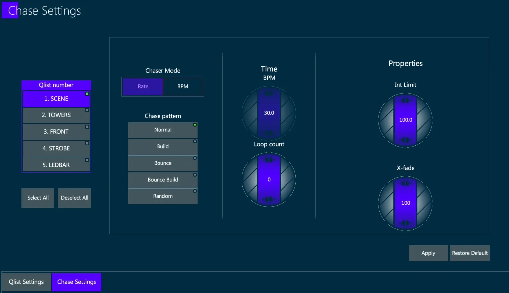
{Chaser Mode} - Defines if the Chaser Time will be controlled by the Rate or by BPM.
{Rate} - The multiplier of the chase timing, based on the Qlist whole timing.
{BPM} - The timing is set by beats per minute, enabling the Time BPM wheel.
{Chase Pattern} - Defines the Cues order of the chaser.
{Normal} - The Cues’ are played individually, the sequence is played forwards in the stored order and the last Cue loops to the first Cue.
{Build} - The Cues’ are played one on top of the previous, the sequence is played forwards in the stored order and the last Cue loops to the first Cue.
{Bounce} - The Cues’ are played individually, the sequence is played forwards in the stored order until the last Cue and then backwards until the first Cue.
{Bounce Build} - The Cues’ are played one on top of the previous, the sequence is played forwards in the stored order until the last Cue and then backwards until the first Cue.
{Random} - The Cues’ are played individually, the sequence is played in random order.
{Time} - If the Chaser Mode is set on BPM, the Time wheel sets the number of BPM. Default time is 30 bpm.
{Loop Count} - Defines the number of loops of the chaser. If the Loop Count is 0 the number of loops will be infinite.
{Properties}
{Int Limit} - Sets a limit to the intensity parameters.
{X-fade} - Sets the crossfade time between the cues from 0% to 100%.
10.7 Tracksheet
The Tracksheet view shows the parameter values of the sequence of Cues inside a Qlist.
Qlist Tracksheet is used to check if the values played back by a Cue are stored as hard-values or are tracked from previous Cues.
The Tracksheet can be also used to directly adjust and update the Cues.
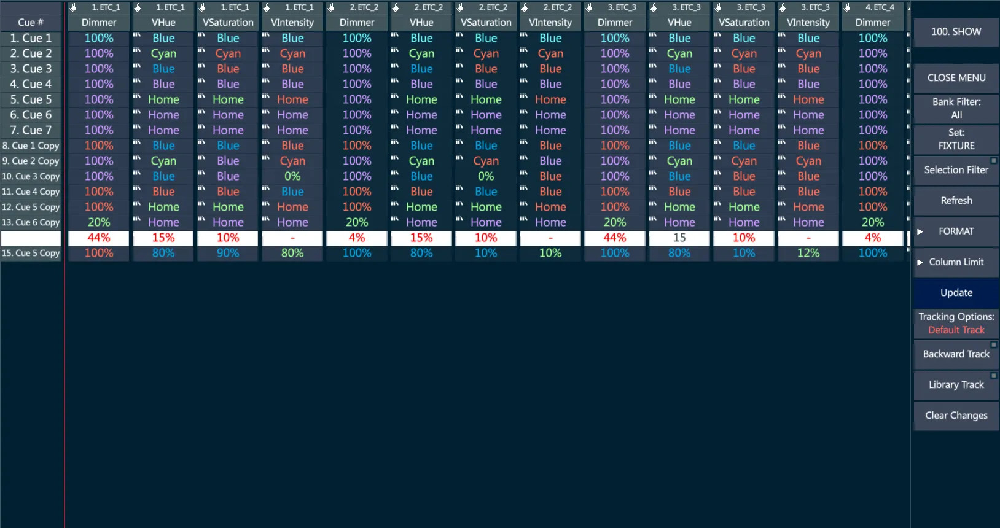
Each line represents a Cue, each column represents a parameter of a fixture stored in the Qlist.
Empty cells show that the param has no value on that Cue.
Colored text cells show the param value, defined by the following color coding:
{Cyan} - The value is stored in the Cue.
{Blue} - The value is stored and it is higher than the previous Cue.
{Green} - The value is stored and it is lower than the previous Cue.
{Red} - The value is stored and it is the same as the previous Cue.
{Violet} - The value is not stored in the Cue, but it is tracked from a previous Cue.
10.7.2 Update Actions
Update Cues with Tracksheet
The values stored inside each Cue can be directly edited into the tracksheet view.
To avoid tracking conflicts, a single Cue can be edited at a time.
To modify any value, tap on the cell and enter the new value with the numeric keyboard, then press Enter or tap outside the selected Cue’s line and it will get a white background (Cue Edit Mode). The edited params will be colored in Red.
When a line is in Cue Edit Mode, the Tracksheet Actions will appear on the view’s Menu:
{UPDATE} - Updates the Cue with the edited values.
{Tracking Options} - Defines if the update operation will be Track, Skip or Cue Only.
{Backward Track} - Enables the BackTrack, updating the edited values in the origin tracking Cue instead of the currently selected Cue.
{Library Track} - Enables the tracking of the library reference instead of using the hard value without references.
{Clear Changes} - Restores the Cue without updating the edited values.